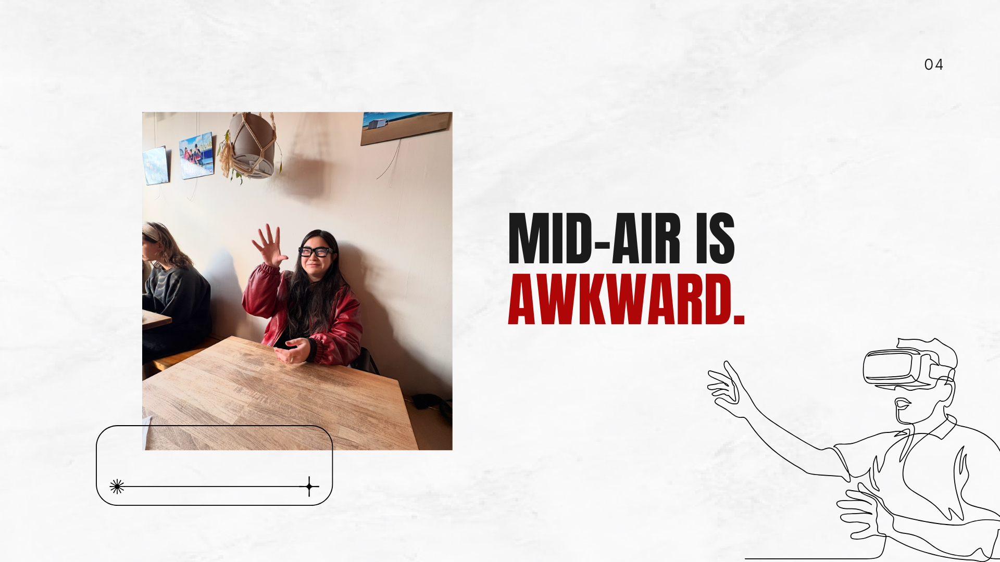
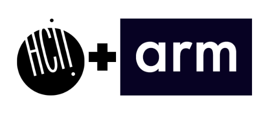
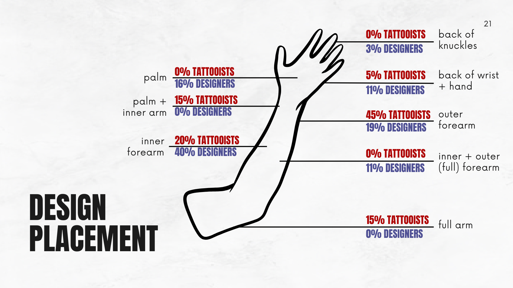
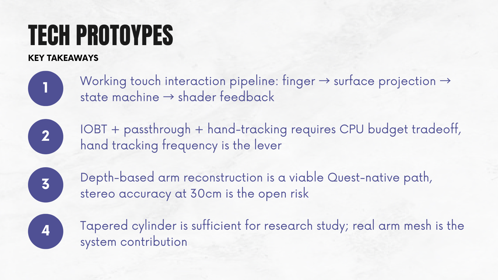

Ink & Interface
Ink & Interface explores how tattooing and body-art practices can inform the design of on-skin XR interfaces. By grounding wearable interaction in body placement, social legibility, and existing embodied traditions, the project asks what a more human starting point for XR could look like.
// understand
This project began with a suspicion: Current XR gestures are awkward and socially obtrusive. What if we could leverage socially acceptable movement that already exists with our body?
We are designing a framework for understanding how body art practices can inform the design of on-skin, wearable XR interfaces.
Research question: How do body art practitioners, enthusiasts, and UX professionals make design decisions about placement, sizing, and visual design when working with the human body as a canvas, and how can this expert knowledge inform the design of on-skin XR interfaces?


// define
Framing the problem
Body-art practices might reshape the way we think about social acceptability and XR design.
Collaboration
This work sits at the intersection of HCI research and industry-facing XR design. It is an MHCI capstone completed in collaboration with Arm, which gave the project both a speculative design angle and a real stakeholder context.

// design
We interviewed nearly 70 different tattoo artists and UX designers to develop a set of principles for how on-body interfaces should look and work.
We've created a set of design principles spanning placement, aesthetics, and interaction,.

// develop
We are now testing our design principles through a series of iterative prototypes, designed specifically for on-skin XR interactions.

// validate
This work is still ongoing, and we are hoping to take it through to a paper.
// promote
Because the project is still in progress, the longer arc is publication, refinement, and seeing where the work can go next.